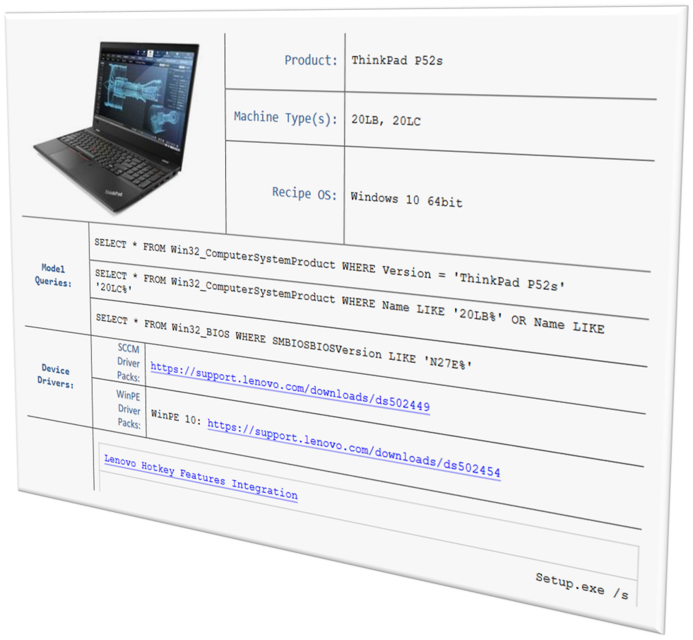

Deployment Recipe Cards
Machine types, WQL queries and pack links for a selected model, on one page.
Inventory
- What it is
- A single page with the key deployment details for one model and one operating system.
- Format
- Generated live in the browser when you pick a model and OS. Can print it or save it as PDF.
- Get there
- From the Enterprise Deployment Solutions portal (bit.ly/LNVTDRC).
One page per model
Every new model in your fleet needs the same handful of details before it can join a deployment: how to identify it, how to target it, and which packs it needs. Recipe Cards put all of it on a single page, so there is no hunting across support pages.

What a card contains
- The machine types for the model.
- WQL queries for targeting the model in Configuration Manager and Intune.
- Driver Pack links for the target OS build.
- HSA Pack links and additional software.
- Special instructions, when a model needs them.
Generated, not downloaded
Cards are now generated dynamically: pick the model and the OS and the page builds itself. Downloadable PDFs are no longer produced for new models. Archived PDFs remain available for older ones.
To look up the same driver pack and HSA pack details from a script, use Find-LnvDriverPack and Find-LnvHSAPack in Lenovo.Client.Scripting.